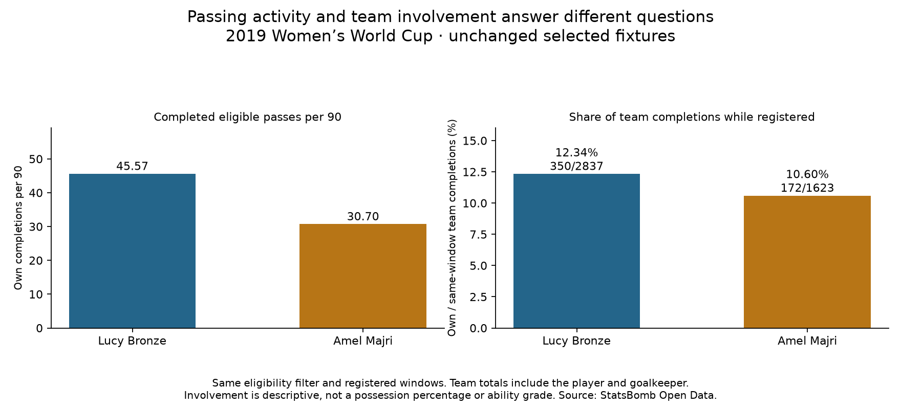

Football analyst training · Recruitment phase · Lesson 70
How involved was the player in her team's passing?
Read: Soccermatics Lesson 3 — Statistical scouting → Normalisation.
Per 90 compares activity over equal time. Now we add the team's passing volume during that same player's registered playing windows.
The completed assignment
Bronze: 350 own completed passes ÷ 2,837 team completions ×100
= 12.34%
Majri: 172 own completed passes ÷ 1,623 team completions ×100
= 10.60%Meaning: about 12 of every 100 eligible team completions were made by Bronze in her selected windows. For Majri, about 11 of 100 were hers.

If a player is substituted off, later team passes do not enter her denominator. Team counts include the player herself and the goalkeeper. All passes use the same eligibility filter as before.
Three different questions
- Completions per 90: how much completed passing activity per unit of time?
- Completion percentage: what fraction of the player's own attempts were completed?
- Team passing share: what fraction of same-window team completions were the player's?
The new share is a descriptive involvement measure. It is not the team's possession percentage or a fully adjusted ability score. Role, team style and difficulty still matter. This custom exercise applies the course's context/normalisation ideas without estimating possession minutes.
Practice: Majri has left the pitch. Should France's next completed pass enter her team-passing denominator?
No. Her numerator and team denominator cover the same registered windows. Counting later passes would mismatch their exposure.
Run 70_fullback_team_passing_share.py in Spyder. The report contains all 35 profiles, and the saved evidence keeps each window's event IDs. Assisted assignment; ask your teacher about any unclear denominator.